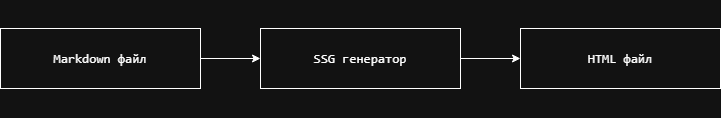
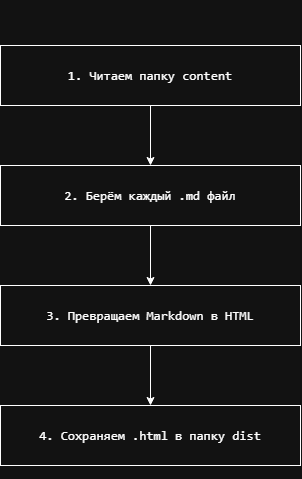
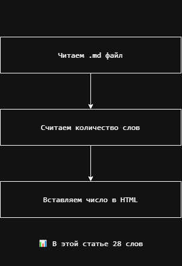

SSG генератор на Node.js
Что это?
Программа, которая превращает Markdown файлы в HTML страницы.
Код
Как запустить
node src/static-gen.js
Результат
Markdown → HTML. Внизу страницы появляется счётчик слов.
Модификация
Добавлен подсчёт количества слов в статье.
Видео
Диаграммы


